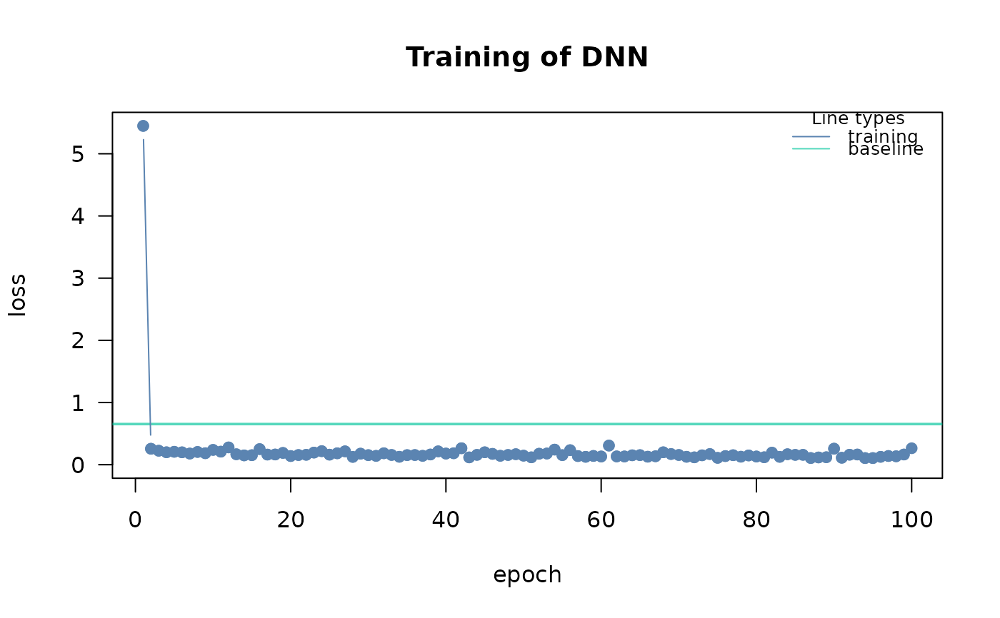
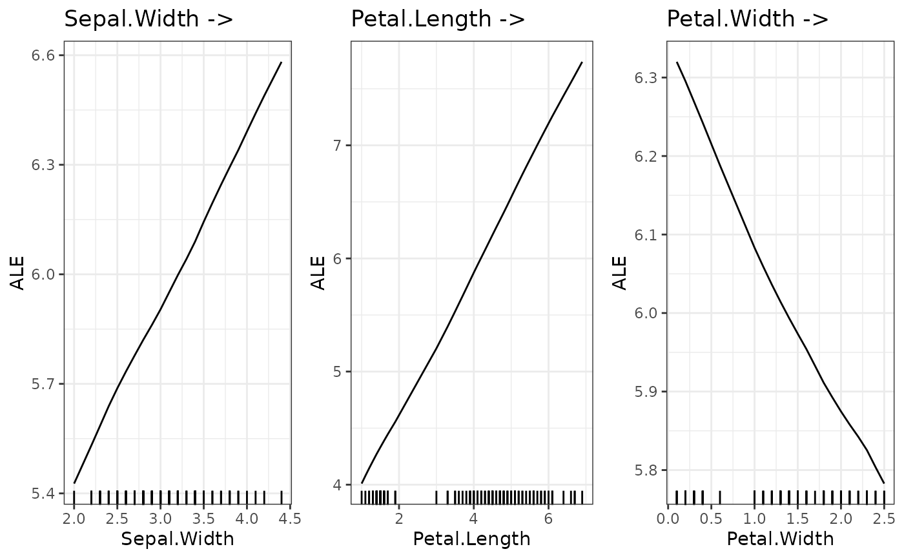
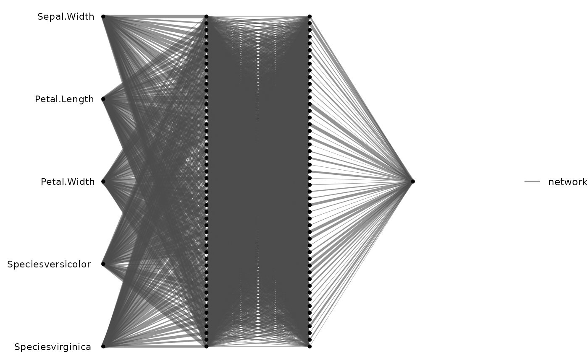

plot_type = "ALE" (default) plots the accumulated local effects of the features (see ALE); plot_type = "arch" draws the network architecture as a graph, including embeddings and fixed effects, and needs the packages 'ggraph' and 'igraph'.
Arguments
- x
a model created by
dnn- plot_type
plot ALE or architecture
- node_size
size of node in plot
- scale_edges
edge weight gets scaled according to other weights (layer specific)
- ...
no further functionality implemented yet
- which_model
which model from the ensemble should be plotted
Value
For "ALE", the plots of ALE; for "arch", a 'ggraph' plot of the network.
Examples
# \donttest{
if(torch::torch_is_installed()){
library(cito)
set.seed(222)
validation_set<- sample(c(1:nrow(datasets::iris)),25)
# Build and train Network
nn.fit<- dnn(Sepal.Length~., data = datasets::iris[-validation_set,])
# accumulated local effects
plot(nn.fit)
# architecture
if(requireNamespace("ggraph", quietly = TRUE)) plot(nn.fit, plot_type = "arch")
}
#> Loss at epoch 1: 4.148449, lr: 0.01000

#> Loss at epoch 2: 0.593515, lr: 0.01000
#> Loss at epoch 3: 0.602909, lr: 0.01000
#> Loss at epoch 4: 0.224309, lr: 0.01000
#> Loss at epoch 5: 0.282317, lr: 0.01000
#> Loss at epoch 6: 0.213606, lr: 0.01000
#> Loss at epoch 7: 0.372588, lr: 0.01000
#> Loss at epoch 8: 0.160625, lr: 0.01000
#> Loss at epoch 9: 0.152372, lr: 0.01000
#> Loss at epoch 10: 0.388369, lr: 0.01000
#> Loss at epoch 11: 0.161435, lr: 0.01000
#> Loss at epoch 12: 0.290627, lr: 0.01000
#> Loss at epoch 13: 0.159140, lr: 0.01000
#> Loss at epoch 14: 0.154433, lr: 0.01000
#> Loss at epoch 15: 0.167672, lr: 0.01000
#> Loss at epoch 16: 0.179516, lr: 0.01000
#> Loss at epoch 17: 0.142703, lr: 0.01000
#> Loss at epoch 18: 0.203522, lr: 0.01000
#> Loss at epoch 19: 0.201760, lr: 0.01000
#> Loss at epoch 20: 0.236933, lr: 0.01000
#> Loss at epoch 21: 0.294068, lr: 0.01000
#> Loss at epoch 22: 0.248120, lr: 0.01000
#> Loss at epoch 23: 0.286087, lr: 0.01000
#> Loss at epoch 24: 0.186577, lr: 0.01000
#> Loss at epoch 25: 0.182119, lr: 0.01000
#> Loss at epoch 26: 0.138280, lr: 0.01000
#> Loss at epoch 27: 0.218021, lr: 0.01000
#> Loss at epoch 28: 0.140121, lr: 0.01000
#> Loss at epoch 29: 0.158173, lr: 0.01000
#> Loss at epoch 30: 0.152426, lr: 0.01000
#> Loss at epoch 31: 0.155091, lr: 0.01000
#> Loss at epoch 32: 0.242091, lr: 0.01000
#> Loss at epoch 33: 0.129694, lr: 0.01000
#> Loss at epoch 34: 0.141205, lr: 0.01000
#> Loss at epoch 35: 0.132767, lr: 0.01000
#> Loss at epoch 36: 0.140314, lr: 0.01000
#> Loss at epoch 37: 0.138337, lr: 0.01000
#> Loss at epoch 38: 0.138961, lr: 0.01000
#> Loss at epoch 39: 0.193771, lr: 0.01000
#> Loss at epoch 40: 0.156899, lr: 0.01000
#> Loss at epoch 41: 0.125170, lr: 0.01000
#> Loss at epoch 42: 0.149645, lr: 0.01000
#> Loss at epoch 43: 0.132053, lr: 0.01000
#> Loss at epoch 44: 0.141116, lr: 0.01000
#> Loss at epoch 45: 0.133163, lr: 0.01000
#> Loss at epoch 46: 0.116391, lr: 0.01000
#> Loss at epoch 47: 0.242822, lr: 0.01000
#> Loss at epoch 48: 0.142855, lr: 0.01000
#> Loss at epoch 49: 0.122670, lr: 0.01000
#> Loss at epoch 50: 0.122497, lr: 0.01000
#> Loss at epoch 51: 0.139540, lr: 0.01000
#> Loss at epoch 52: 0.104560, lr: 0.01000
#> Loss at epoch 53: 0.130413, lr: 0.01000
#> Loss at epoch 54: 0.226350, lr: 0.01000
#> Loss at epoch 55: 0.223719, lr: 0.01000
#> Loss at epoch 56: 0.215780, lr: 0.01000
#> Loss at epoch 57: 0.179316, lr: 0.01000
#> Loss at epoch 58: 0.187891, lr: 0.01000
#> Loss at epoch 59: 0.180336, lr: 0.01000
#> Loss at epoch 60: 0.120037, lr: 0.01000
#> Loss at epoch 61: 0.151618, lr: 0.01000
#> Loss at epoch 62: 0.139039, lr: 0.01000
#> Loss at epoch 63: 0.125484, lr: 0.01000
#> Loss at epoch 64: 0.116120, lr: 0.01000
#> Loss at epoch 65: 0.120134, lr: 0.01000
#> Loss at epoch 66: 0.147757, lr: 0.01000
#> Loss at epoch 67: 0.158359, lr: 0.01000
#> Loss at epoch 68: 0.201153, lr: 0.01000
#> Loss at epoch 69: 0.112226, lr: 0.01000
#> Loss at epoch 70: 0.136441, lr: 0.01000
#> Loss at epoch 71: 0.137811, lr: 0.01000
#> Loss at epoch 72: 0.117525, lr: 0.01000
#> Loss at epoch 73: 0.238242, lr: 0.01000
#> Loss at epoch 74: 0.120036, lr: 0.01000
#> Loss at epoch 75: 0.118435, lr: 0.01000
#> Loss at epoch 76: 0.242686, lr: 0.01000
#> Loss at epoch 77: 0.253676, lr: 0.01000
#> Loss at epoch 78: 0.158222, lr: 0.01000
#> Loss at epoch 79: 0.118911, lr: 0.01000
#> Loss at epoch 80: 0.123034, lr: 0.01000
#> Loss at epoch 81: 0.132148, lr: 0.01000
#> Loss at epoch 82: 0.166287, lr: 0.01000
#> Loss at epoch 83: 0.115061, lr: 0.01000
#> Loss at epoch 84: 0.225818, lr: 0.01000
#> Loss at epoch 85: 0.141825, lr: 0.01000
#> Loss at epoch 86: 0.115403, lr: 0.01000
#> Loss at epoch 87: 0.184237, lr: 0.01000
#> Loss at epoch 88: 0.177698, lr: 0.01000
#> Loss at epoch 89: 0.117413, lr: 0.01000
#> Loss at epoch 90: 0.164711, lr: 0.01000
#> Loss at epoch 91: 0.104821, lr: 0.01000
#> Loss at epoch 92: 0.210144, lr: 0.01000
#> Loss at epoch 93: 0.281347, lr: 0.01000
#> Loss at epoch 94: 0.102925, lr: 0.01000
#> Loss at epoch 95: 0.103622, lr: 0.01000
#> Loss at epoch 96: 0.107196, lr: 0.01000
#> Loss at epoch 97: 0.148967, lr: 0.01000
#> Loss at epoch 98: 0.117641, lr: 0.01000
#> Loss at epoch 99: 0.130925, lr: 0.01000
#> Loss at epoch 100: 0.185911, lr: 0.01000
#> Categorical features are not yet supported.


# }